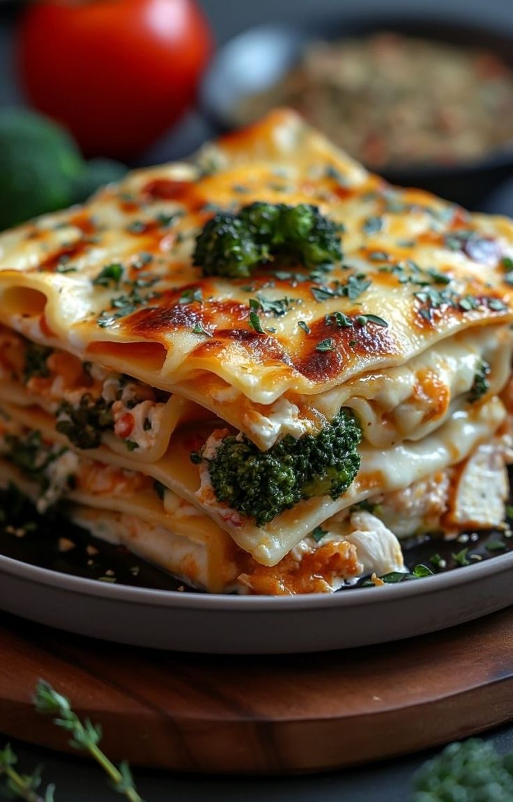

Home
Broccoli lasagna recipe

Ingredients
- (15 ounce) container ricotta cheese
- lb frozen broccoli florets (thawed, patted dry and chopped)
- cups grated mozzarella cheese
- cup grated parmesan cheese
- (16 ounce) jar marinara sauce
- cup heavy cream
- no-boil lasagna noodles
- cooking spray
Steps
- Preheat over to 400 degrees.
- In a large bowl, combine ricotta, broccoli, 2 cups mozzarella, 1/4 cup parmesan.
- In small bowl, combine marina sauce and cream.
- Spoon layer of sauce on bottom of 9 x 13 pan, top with noodles, more sauce, cover with the cheese broccoli mixture. Repeat until it is all gone. Each layer put the noodles in a different direction it makes it easier to cut when you serve! When top layer of noodles is down, sprinkle with remaining mozzarella and parmesan.
- Cover tightly with sprayed foil and bake 40 minutes. uncover and bake until the top is golden brown.
- I double the recipe for a bigger group and use one of those "big lasagna" tins from the grocery store. bake a larger sized lasagna about 15 minutes more.